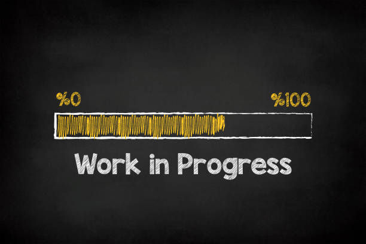

Hello, I'm
OmarMehenni
Full-Stack Developer
Backend Java/Spring Boot & Android/Kotlin
I design scalable REST APIs, robust native Android apps, and complete backend architectures. Internship completed — now open to new opportunities.
class OmarMehenni {
String location = "Barcelona";
String[] stack = {
"Java", "Spring Boot",
"Kotlin", "Android"
};
boolean available = true;
// Open to opportunities
}
Backend-first developer, open to opportunities
Specialized in Java/Spring Boot backend and Android Kotlin development. I build the server-side architecture that powers mobile and web products — from API design to deployment. Rigorous engineering background, currently looking for a full-time IT position.
Languages spoken
Scalable Backend
REST APIs built with Spring Boot, JPA, JWT and solid MVC architecture.
Android Native
Kotlin apps with Retrofit, ViewModel and Fragments — from UI to API integration.
Real-time Systems
Built data pipelines and real-time analytics systems in an industrial IoT context.
Multilingual
Comfortable working in international teams — French, Spanish, English, Catalan.
Professional experience
Admira (Bits & Atoms)
Software Developer Intern
Missions
- 01Multiplatform Digital Signage & IoT development (Linux, Windows, Android)
- 02Machine Learning and AI integration for automation and real-time analytics
- 03Scalable backend architecture design and legacy code refactoring
Key contributions
- ›Worked on production-grade systems deployed across multiple OS environments
- ›Applied ML models to real-time data streams in an industrial IoT context
- ›Contributed to backend refactoring that improved system maintainability
- ›Collaborated in an agile team on cross-platform software delivery
Open to work. Available for full-time positions in backend, Android or full-stack development.
Technical expertise
Selected work
Medical telemetry platform for real-time patient monitoring. Smartwatch integration, vital data conversion to HL7 FHIR standard, clinical logic engine for anomaly detection and alert generation.
Role
Backend + Android Developer

Smart Finance
Personal finance management app with AI-driven insights, budget tracking, and expense analytics. Real-time data sync and smart categorization.
Certifications & training
Android 14 & Kotlin Development
Udemy
Database Programming with SQL
Oracle
Python Developer
Udemy
Let's work together
Open to full-time positions, freelance missions, and interesting projects. I respond quickly.